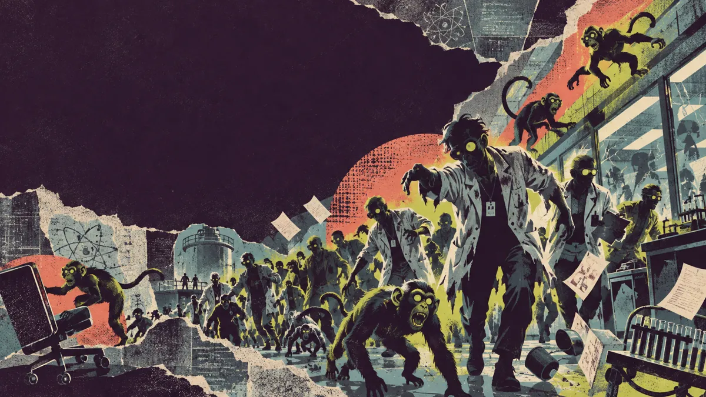
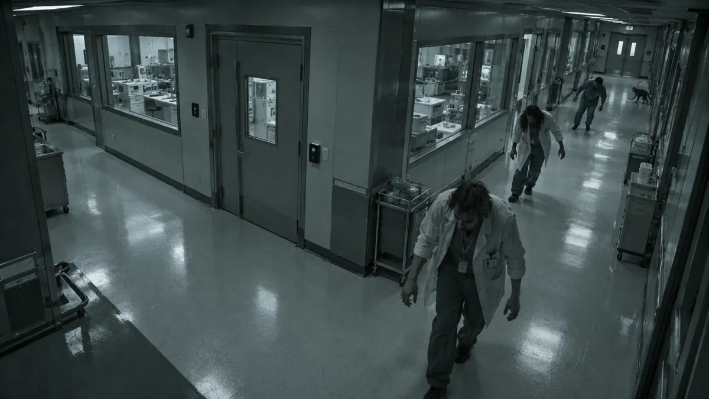

SURVIVE checklist
Seven prompts to help your users understand and act.
Download survive checklistMy Laracon AU 2026 talk: a zombie outbreak. One very stressed Gerald. And software that really needs to explain what happens next.
Help people understand, recover and finish—before the zombies catch up.

Take the teaching lens back to your team. Pick one feature, follow a difficult path, and make the next step clearer.
The SURVIVE checklist, a feature review worksheet, before-and-after examples, an error message rewrite guide, a notification purpose matrix and workflow worksheets.
Examples cover forms, dashboards, permissions, notifications and API outcomes. The ZIP also includes editable examples, a CSV matrix and an illustrative JSON response.
Seven prompts to help your users understand and act.
Download survive checklistTrace a difficult path and plan one practical improvement.
Download feature review worksheetSmall rewrites across five familiar product situations.
Download before-and-after examplesExplain the situation, impact and supported next step.
Download error message rewrite guideChoose history, notification, direct message, alert or escalation.
Download notification purpose matrixMap hand-offs, failure, recovery and the final outcome.
Download workflow review worksheetsGerald is a security officer. He wants to eat his sandwich and go home at five. Unfortunately, Lab Three has other plans.

Can SIREN help Gerald report it? Follow the story in the talk—and bring the teaching lens back to your own software.
Use these prompts on a form, workflow, dashboard or API response. Open a letter to see what to look for.
Distinguish loading, empty, filtered, no access and failed states. Give each a useful next step.
Use familiar words. Explain technical terms and what a message means for the user’s task.
Show requirements and useful examples before the attempt. Ask what applies, then show what applies.
Locate the problem and explain it specifically. Preserve the user’s work.
Offer a route forward: request access, resume after sign-in, or continue safely with missing details.
Match communication to importance. Distinguish sent, delivered, seen and acknowledged.
Show what succeeded, what failed, who acts next and whether the user needs to do anything.
I work in software engineering at Westpac and bring a background in vocational education and award-winning community radio to the way I build. Outside work, I’m exploring expressive robotics and animatronics.